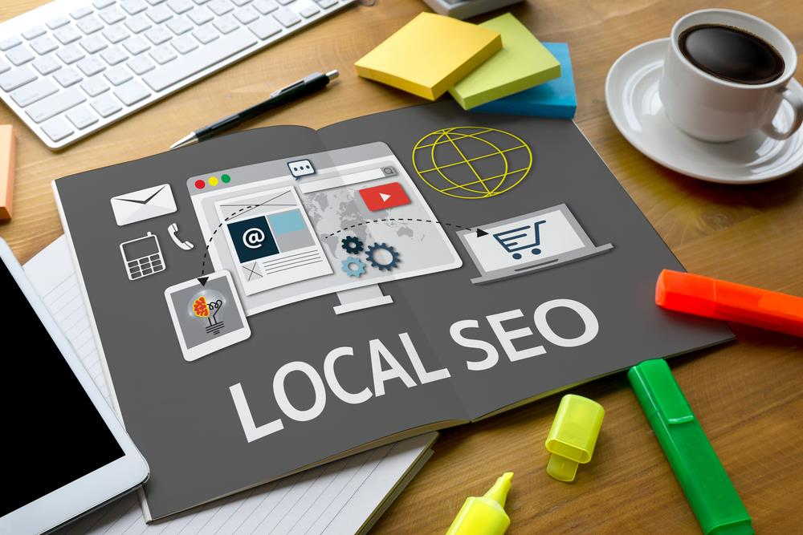

<!DOCTYPE html PUBLIC "-//W3C//DTD XHTML 1.0 Transitional//EN" "http://www.w3.org/TR/xhtml1/DTD/xhtml1-transitional.dtd"><html xmlns="http://www.w3.org/1999/xhtml"><head><meta http-equiv="content-type" content="text/html;charset=UTF-8">

<meta charset="UTF-8">
<meta http-equiv="Content-Type" content="text/html; charset=utf-8">
<meta http-equiv="X-UA-Compatible" content="IE=edge,chrome=1">
<meta name="viewport" content="width=device-width, initial-scale=1.0, maximum-scale=1.0, user-scalable=no">
<meta name="google-site-verification" content="MaU7baWWrEjrqG8OsqSctQTtkQ6ujhstreyK1d5gXkc">
<meta name="ahrefs-site-verification" content="12087e3ea5805ca83cac9aab62259e4f861670b2e94b42db700de7744028f4d4">
<meta name="yandex-verification" content="55a21d82a563a57b">
<meta name="twitter:card" value="summary">
<meta property="og:locale" content="en_US">
<meta property="og:title" content="Webzool | Winning Digital Solutions">
<meta property="og:description" content="Webzool is the #1 SEO company in Los Angeles.We have been providing SEO services for Los Angeles companies.">
<meta property="og:type" content="website">
<meta property="og:url" content="https://www.webzool.io/">
<meta property="og:site_name" content="Webzool Digital Agency">
<meta property="og:image" content="../static/images/og-image-01.png">
<title>Local & Organic Professional SEO Consultant Los Angeles, California</title>
<meta name="description" content="As an SEO consultant Los Angeles, WebZool applies different techniques to deliver successful marketing strategies to rank your site on the first page.">
<link rel="icon" type="image/png" href="../static/images/favicon.ico">
<link rel="stylesheet" href="../../stackpath.bootstrapcdn.com/bootstrap/4.1.3/css/bootstrap.min.css" crossorigin="anonymous">
<link rel="stylesheet" type="text/css" href="../static/css/slick.css">
<link rel="stylesheet" type="text/css" href="../static/css/slick-theme.css">
<link rel="stylesheet" type="text/css" href="../static/css/main.css" media="all">

<script src="../../www.googletagmanager.com/gtag/js" type="8eb22b419a4266358d21ad94-text/javascript"></script>

<script type="8eb22b419a4266358d21ad94-text/javascript">
		! function (f, b, e, v, n, t, s) {
			if (f.fbq) return;
			n = f.fbq = function () {
				n.callMethod ?
					n.callMethod.apply(n, arguments) : n.queue.push(arguments)
			};
			if (!f._fbq) f._fbq = n;
			n.push = n;
			n.loaded = !0;
			n.version = '2.0';
			n.queue = [];
			t = b.createElement(e);
			t.async = !0;
			t.src = v;
			s = b.getElementsByTagName(e)[0];
			s.parentNode.insertBefore(t, s)
		}(window, document, 'script',
			'https://connect.facebook.net/en_US/fbevents.js');
		fbq('init', '410331106460614');
		fbq('track', 'PageView');
	</script>
<noscript></noscript>


<script src="../../www.googletagmanager.com/gtag/js" type="8eb22b419a4266358d21ad94-text/javascript"></script>
<script type="8eb22b419a4266358d21ad94-text/javascript">
		window.dataLayer = window.dataLayer || [];

		function gtag() {
			dataLayer.push(arguments);
		}
		gtag('js', new Date());

		gtag('config', 'UA-143891312-1');
	</script>

<script type="8eb22b419a4266358d21ad94-text/javascript">
		(function (m, e, t, r, i, k, a) {
			m[i] = m[i] || function () {
				(m[i].a = m[i].a || []).push(arguments)
			};
			m[i].l = 1 * new Date();
			k = e.createElement(t), a = e.getElementsByTagName(t)[0], k.async = 1, k.src = r, a.parentNode.insertBefore(k,
				a)
		})
		(window, document, "script", "https://mc.yandex.ru/metrika/tag.js", "ym");

		ym(54457120, "init", {
			clickmap: true,
			trackLinks: true,
			accurateTrackBounce: true,
			webvisor: true
		});
	</script>
<noscript>
		<div></div>
	</noscript>


<script type="8eb22b419a4266358d21ad94-text/javascript">
		(function (w, d, s, l, i) {
			w[l] = w[l] || [];
			w[l].push({
				'gtm.start': new Date().getTime(),
				event: 'gtm.js'
			});
			var f = d.getElementsByTagName(s)[0],
				j = d.createElement(s),
				dl = l != 'dataLayer' ? '&l=' + l : '';
			j.async = true;
			j.src =
				'https://www.googletagmanager.com/gtm.js?id=' + i + dl;
			f.parentNode.insertBefore(j, f);
		})(window, document, 'script', 'dataLayer', 'GTM-KPDC95D');
	</script>


<noscript><iframe src="https://www.googletagmanager.com/ns.html?id=GTM-KPDC95D" height="0" width="0" style="display:none;visibility:hidden"></iframe></noscript>

<script type="8eb22b419a4266358d21ad94-text/javascript">
		gtag('config', 'AW-722911980/maqcCM7nmqgBEOyF29gC', {
			'phone_conversion_number': '(855)-681-0959'
		});
	</script>
</head>
<body>
<nav class="navbar navbar-expand-lg navbar-dark bg-tr" id="navbar">
<a class="navbar-brand" href="../index.html">
<span></span>

</a>
<button class="navbar-toggler collapsed" type="button" data-toggle="collapse" data-target="#navbarNav" aria-controls="navbarNav" aria-expanded="false" aria-label="Toggle navigation">
<span class="navbar-toggler-icon"></span>
</button>
<div class="collapse navbar-collapse" id="navbarNav">
<ul class="navbar-nav ml-auto">
<li class="nav-item">
<a class="nav-link" href="../index.html">Home</a>
</li>
<li class="nav-item dropdown">
<a class="nav-link" href="../index.html" id="navbarDropdown" role="button" data-toggle="dropdown" aria-haspopup="true" aria-expanded="false">
Services
</a>
<div class="dropdown-menu" aria-labelledby="navbarDropdown">
<a class="dropdown-item web" href="../web-design/index.html">Web Design & Development<span class="sub">Responsive Web Design Solutions</span></a>
<a class="dropdown-item digital" href="../seo/index.html">Search Engine Optimization<span class="sub">Enjoy the view from the top of the google search results.</span></a>
<a class="dropdown-item brand" href="../branding/index.html">Branding Identity & Graphic Design<span class="sub">Logo and Social Media Design</span></a>
<a class="dropdown-item pr" href="../pr/index.html">PR Services<span class="sub">Promotion Services</span></a>

</div>
</li>
<li class="nav-item">
<a class="nav-link" href="../about/index.html">About Us</a>
</li>
<li class="nav-item">
<a class="nav-link" href="../portfolio/index.html">Portfolio</a>
</li>

<li class="nav-item">
<a class="nav-link" href="../glossary/index.html">Glossary</a>
</li>
<li class="nav-item">
<a class="nav-link" href="../blogs/index.html">Blog</a>
</li>
<li class="nav-item">
<a class="nav-link" href="../contact/index.html">Contact Us</a>
</li>
</ul>
</div>
</nav>
<section class="blog-detail">
<div class="container">
<div class="row">
<div class="col-sm-12">
<div class="meta-box">
<div class="featured-image-box" style="background-image: url('/media/posts/2019/09/13/local-seo.svg');">
</div>
<h1>Local & Organic Professional SEO Consultant Los Angeles, California</h1>
<p class="blog-short">As an SEO consultant Los Angeles, WebZool applies different techniques to deliver successful marketing strategies to have your site on the first page of search results.</p>
<p><span class="blog-author-and-date"><i>Nurlan Rahimli</i></span></p>
<p><span>Aug.12,2019</span> Viewed <span></span></p>
<div class="sharethis-inline-share-buttons"></div>
</div>
</div>
</div>
</div>
</section>
<section class="blog-content">
<div class="container-fluid">
<div class="row">
<div class="col-md-3">
<div class="left-sidebar">
<div class="table-of-contents"></div>
<div class="banner-one">
<h1 class="banner-title-light">Talk With Our SEO Specialist</h1>
<a href="../contact/index.html" class="banner-btn-light">Contact Us</a>
</div>

</div>
</div>
<div class="col-md-6">
<div class="insidePage">
<article>
<div class="all-questions">
<p>Generally speaking, SEO services aim to improve both the volume and quality of traffic to your website. The traffic comes from different search engines. It makes your website get a high rank and appear on the top of search results. As a result, you get lots of traffic to your website and manage to maximize your profit. As an <em>SEO consultant Los Angeles</em>, WebZool applies different techniques to deliver successful marketing strategies to have your site on the first page of search results. With the help of a professional organic SEO team, your website will appear on the top of clients search results. </p>
<p> </p>
<h2>Why Is Local SEO important for your company?</h2>
<p></p>
<p>Each company especially start-ups, rely on <em>local SEO</em> services to prove their existence and gain competitive advantage. To do that you need to apply proven digital marketing strategies and different SEO services. Considering local SEO should be your priority if you want to <a href="../get-juicy-SEO-traffic-gaming-site/index.html" target="_blank">get juicy SEO traffic</a> to your web page. The main reason is that 4 out of 5 clients use local search to find out the required information. For example, what a client would do if he/she wants to order a meal online? The consumer will search for local businesses through search engines. </p>
<p>Consider a different example. If the client wants to order a cab for his/her holiday trip, what would be the first step? The answer is, again the same. The consumer will search for local agencies who could provide a cab for a long-distance holiday. From the examples mentioned above, you could realize the essence of local and <em>organic SEO</em>. Therefore, If you want to differentiate your company from your competitors, you should focus on organic SEO. If you skip the <a href="../the-best-wordpress-seo-services-in-los-angeles/index.html" target="_blank">SEO services</a> for local clients, you will probably miss the 80% or 90% of your clients. As you can see, it is a high percentage if you want to increase your profit.</p>
<p> In other words, SEO services for local consumers is an essential factor to stay competitive and recognizable in the market. Today almost every industry is competitive and contains thousands of companies. Therefore, keeping local SEO would be the best option to stay alive among other local agencies. Imagine that your potential customer search for your services online and come across your competitors products. There is no need to mention how it would damage your business and also your profit. </p>
<p> </p>
<h2>Top SEO trends for your company</h2>
<p>SEO services help you a lot to target specific business areas. You can grow your business dramatically within a particular locality, hiring a professional <em>SEO consultant Los Angeles</em>. Especially, small businesses could benefit from SEO services to survive in the competitive industry. We recommend that you do not worry if you are new in the industry and have a limited budget. You can rely on <a href="../affordable-local-seo-services-in-los-angeles/index.html" target="_blank">SEO consultant Los Angeles</a>. The agency will apply the required steps to spread the word about your business.</p>
<p>Before choosing the best SEO consultant in Los Angeles, you need to know about popular concepts of SEO services. It will help you to evaluate the existing marketing companies. As a result, you will know about the recent trends and make the best decision for your business. You need to follow new improvements and direct your both effort and money to the right place. 2018 has brought new changes to how people apply SEO services. With the coming of 2019, <a href="../digital-marketing-strategies-apps-2019/index.html" target="_blank">digital marketing strategies</a> is developing continuously. There are several questions you could ask to get the best result from SEO.</p>
<p> </p>
<h2>What could you do to maximize your profit?</h2>
<p></p>
<p>First of all, the business owner should consider target customers. You need to decide who is going to buy your product or service. Next, you need to understand what uniqueness you have in your product. Why should customers buy your service instead of your competitors' products? Additionally, it is essential to define the age of your target group. It plays a vital role while planning your marketing strategy. Then comes another important step which is about learning your competitors. You need to make a comprehensive market research to learn more about your competitors. Try to learn why they are successful and what you can do things differently from them to bring the uniqueness. After answering the above questions, you could switch to SEO services. Think about what <a href="../seo-copywriting-tips-secrets-strategies-in-2019/index.html" target="_blank">SEO strategies</a> you could use to get the best result.</p>
<p>The SEO strategies that you are going yo apply should help you to get lots of new customers and keep the current ones. The aim here is not only about to get new customers continuously. It is also about making your current customers the loyal ones. It does not only depend on SEO strategies. The quality of your services and products also play a substantial role here.  </p>
<p>If you are new in the business and you have a start-up, then start to answer the questions mentioned above. Having exact answers to these questions will help you to create a clear marketing strategy. Keep in mind that the most crucial part is to use your research skills. You need to research about similar products, competitors, the best SEO services, and an experienced SEO agency in Los Angeles. Learn more about what SEO strategies your competitors use. </p>
<p> </p>
<h2>Top SEO strategies an experienced SEO consultant Los Angeles use</h2>
<p>We want to start with the link building. Link building has proved itself among SEO strategies. It is the most common way that SEO agencies use to get a high rank for your webpage. You should not underestimate that methodology if you want to get great results from digital marketing. While applying link building, you can acquire links from reliable websites to increase your ranking. But note that if you want to get the best result from link-building, you need to apply it correctly. Otherwise, it could decrease the reliability of your website instead. When you do link building right, it will help you a lot to <a href="https://www.wikihow.com/Increase-Website-Traffic/index.html" target="_blank">increase website traffic</a>. Link building helps your customers to find your webpage. However, while considering link building, you need to understand that quality is more important than quantity. It is not the best strategy to put lots of links to your content. </p>
<p>Today search engines are smart enough to differentiate the quality of links you use. Therefore, you need to be careful about the relationships. They should be from reliable sources and relevant to your content. You can do a quick search about the competitors links and plan your strategy according to the research. If you get reliable links from reliable sources, you will be able to increase the visibility of your website.  </p>
<p> </p>
<h3>User Experience</h3>
<p>The next point we would like to mention is about user experience. While building a web page and applying SEO strategies, you need to consider your users. If you have a website which is hard to navigate for the user, then they will immediately leave the page. That case would be harmful to your business. The reason is that if users move the page quickly, then, Google gives low rank to your site. There is a notion that users wait approximately 3-7 seconds for page load after entering the link. If it takes longer than 7 seconds, users leave the page and try another link on the search result. Therefore, user experience should be an essential part of the best SEO  strategy. </p>
<p>Search engines can decide which web pages are useful based on user interaction. If the user immediately leaves the page, then the search engine determines that the page is not helpful enough. As a result, it gives a low rank. On the other hand, if the page gets lots of traffic and provides a high quality of the <a href="../10-tips-for-best-seo-content-creation-in-2019/index.html" target="_blank">SEO content creation,</a> it gains high ranking from Google. </p>
<p>Additionally, nowadays, search engines can determine the speed, navigation, and readability of the webpage easily. Based on this information search engine decides on user experience. And according to user experience, your website gets the ranking. Therefore, an SEO consultant Los Angeles needs to examine the search habits of your customers to bring an excellent user experience. Make your webpage accessible for tablets, PCs, and smartphones. Nowadays, most people use their smartphones to search for something online. You could increase traffic, considering mobile phone users as well. </p>
<p> </p>
<h3>Voice search</h3>
<p></p>
<p><a href="https://whatis.techtarget.com/definition/voice-search/index.html" target="_blank">Voice search</a> is another trending topic is SEO strategies. Voice-to-text technology has brought new advancements on how to search for things online. It makes the searching process more comfortable and more personal. According to Google, today, each one out of five searches uses voice to tech feature. And it seems that the feature is going to dominate the market. Therefore, SEO consultant agency in Los Angeles that you are going to hire should have in-depth knowledge about voice search. </p>
<p>As a business owner, you need to optimize your webpage by using natural language keywords. You could use longer and several keywords to increase traffic. Note that voice technology is developing day by day and you should prepare your business for that development. You can hire an experienced SEO consultant Los Angeles to help you in this process. Voice technology comes with lots of advancements and makes SEO strategies more developed and challenging. </p>
<p>Additionally, there is another trending topic in an SEO strategy which is about video ads. According to statistics, by the end of 2019, almost 90% of traffic will come from video ads. Video contents will contain customer reviews, product or service descriptions, adverts, and behind the scene videos. We have already seen several examples of video contents. And as we can see, it is going to spread in the future.</p>
<p> </p>
<h2>Role of artificial intelligence in SEO strategy</h2>
<p>Development of technology creates new and exciting opportunities for the SEO industry. Machine learning and artificial intelligence is the latest trend that is about change in every sector. Digital marketing is another industry which will use those technologies to bring new concepts. For example, RankBrain is a machine learning algorithm which aims to <a href="../key-steps-rise-top-search-results-google-search/index.html" target="_blank">improve the search results</a>. It helps to display more relevant web pages to customers. However, all these technologies create some difficulties for business owners. Now you need to provide more qualitative and relevant content to get high ranking. </p>
<p>We have seen lots of advancements in machine learning in 2019. Experts claim that we are going to see more ones in 2020. Especially, AI is going to change the way SEO works. Therefore, you need to find the best SEO consultant Los Angeles who is ready to apply these technologies to maximize your profit. </p>
<p>SEO trends for a local audience is an essential part you need to consider. In the competitive industry, you need to hire the best local SEO consultant Los Angeles who could apply the latest strategies to keep your business competitive. </p>
<p>You can optimize your webpage using long keywords. It will help you to increase brand conversion. Try to create a high quality of contents using the latest technologies related to AI, and it will be enough. </p>
<p> </p>
<h2>Seo consultant Los Angeles to get organic traffic</h2>
<p>Nowadays, if you want to create an online business, you need to know the essence of <a href="https://en.wikipedia.org/wiki/Search_engine_optimization/index.html" target="_blank">search engine optimization.</a> In search engine optimization, it is essential to get organic and local traffic to your website. You need to find out different ways to help people to discover you online. Every day thousands of businesses publish their webpage, and it is almost impossible to differentiate your website among them. Therefore, you need a strong SEO strategy to stand out from the crowd. </p>
<p>SEO consultant Los Angeles contains a group of experts that have a deep understanding of organic and local traffic. They also know which strategy is best for your company. An experienced and professional SEO expert understands every detail about SEO. They analyze your business and offer you different ways to optimize your webpage. Generally, they come up with different strategies with different price, and you choose your plan between them. </p>
<p> </p>
<h2>Do you need a separate SEO agency?</h2>
<p></p>
<p>Several years ago, people did not know a lot about what is SEO. Business owners did not know how they could apply those services to their businesses. However, today, each business owner knows what SEO is and why they need an agency to get the local traffic to their webpage. But the problem is that many people do not know that SEO is more than just usage of keywords. To get the best SEO strategy, you need to apply several strategies. For example, one of them is that you need to post blog posts continuously to various websites. They should contain <a href="../ultimate-backlink-building-strategies-2019/index.html" target="_blank">backlink building</a> from different reliable websites. Therefore, most of the best sites hire an SEO consultant in Los Angeles. These experts have experience and in-depth knowledge about SEO. SEO consultant Los Angeles will recommend you the best strategy which could bring you a high ranking. </p>
<p> </p>
<h2>Hiring an SEO agency as the best choice</h2>
<p>Seo agencies have lots of experience with different companies from different industries. They do not spend time to learn SEO  and apply it to your business. Because they already know each aspect of SEO and is ready to offer you lots of proven strategies. Time is significant in the industry. Therefore, with the help of an SEO agency, you will immediately apply digital marketing without wasting time in the learning process. On the other hand, good SEO companies already know with which services you could get the best result. Therefore, you do not need to concern about which strategies could fit your company. </p>
<p>Additionally, SEO is developing industry and changing constantly. We observe changes every day in <a href="../6-essential-seo-strategies-focusing/index.html" target="_blank">SEO strategies</a>. You, as a business owner, could not follow all these changes. Therefore, you need to hire an SEO agency that supports all the trends and apply them to your business to bring the best result. A successful agency will learn your business and industry. Also, the company will become part of your <a href="../digital-marketing-help-business-grow/index.html" target="_blank">digital marketing</a> team.</p>
<p>To sum up, hiring an experienced SEO consultant Los Angeles is a crucial step to get high ranking. But before choosing the right company takes time to do some research about the agencies and learn about trends. It will make the decision-making process more comfortable. </p>
</div>
</article>
</div>
</div>
<div class="col-md-3" style="position: relative;">
<div class="right-sidebar">
<form action method="POST" class="side-form">
<h4>Contact Us for Free Consultation</h4>
<input type="hidden" name="csrfmiddlewaretoken" value="k25fKzlsjgILyMwH5dvXSTIh96jEbi6ZYWpwqx2ZKBoTg90yGthFpmFR4JqqCaz9">
<input id="first_name" type="text" name="first_name" class="first_name" required="required" placeholder="First Name">
<input id="last_name" type="text" name="last_name" class="last_name" required="required" placeholder="Last Name">
<input id="email" type="email" name="email" class="email" required="required" placeholder="Email">
<input id="phone_number" type="phone" name="phone_number" class="phone" required="required" placeholder="Phone">
<input class="form-btn-green" type="submit" value="submit">
</form>

</div>
</div>
</div>
</div>
</section>
<section class="comment">
<div class="container">
<div class="comment-box">
<div id="disqus_thread"></div>
<script type="8eb22b419a4266358d21ad94-text/javascript" src="../../webzool.disqus.com/embed.js"></script>
<noscript>
                <p><a href="http://webzool.disqus.com/?url=ref">View the discussion thread.</a></p>
            </noscript>
<p><a href="https://disqus.com/index.html" class="dsq-brlink">blog comments powered by <span class="logo-disqus">Disqus</span></a></p>
</div>
</div>
</section>
<section class="blog-form-box">
<div class="container">
<div class="call-form-box">
<form method="POST" id="mailchimpform">
<input type="hidden" name="csrfmiddlewaretoken" value="k25fKzlsjgILyMwH5dvXSTIh96jEbi6ZYWpwqx2ZKBoTg90yGthFpmFR4JqqCaz9">
<div class="row">
<div class="col-md-8">
<input id="email" type="email" name="email" class="form-field" placeholder="Enter Your E-mail">
</div>
<div class="col-md-4">
<input type="submit" id="email_submit" class="form-btn full-width-btn" style="margin-top: 0px;" value="Get Free eBook">
</div>
</div>
</form>
</div>
</div>
</section>
<section class="related-posts">
<div class="section-title text-center">
<h1>Hand-picked related articles</h1>
</div>
<div class="container">
<div class="row">
<div class="col-md-4">
<div class="blog-item">
<a href="../youtube-seo-rank-youtube-videos-better-results/index.html" class="blog-image">
<div class="image" style="background-image: url('/media/posts/2019/09/06/you.svg');"></div>
</a>
<div class="blog-content">
<h2 class="blog-title">YouTube SEO - rank your YouTube videos for better results</h2>
<p class="blog-desc">Your Youtube ranking plays an essential role when it comes to the number of views and likes you are getting. Youtube SEO might seem challenging at first, but with dedication and a right dose of effort you can get your videos on top of the Youtube search results, gaining respect and improving your brand’s reputation</p>
</div>
<div class="blog-footer">
<div class="col-sm-8" style="padding: 0px;">
<p class="author"><i class="far fa-user-circle"></i>Aziz Hamidov</p>
</div>
<div class="col-sm-4" style="padding: 0px;">
<p class="date"><i class="far fa-calendar"></i>Mar. 18, 2019</p>
</div>
</div>
</div>
</div>
<div class="col-md-4">
<div class="blog-item">
<a href="../ultimate-guide-social-media-marketing-2019/index.html" class="blog-image">
<div class="image" style="background-image: url('/media/posts/2019/09/06/smm.svg');"></div>
</a>
<div class="blog-content">
<h2 class="blog-title">Ultimate Guide for Social Media Marketing in 2019</h2>
<p class="blog-desc">Pros of social media make marketers choose this platform. What will we do for being successful in Social Media Marketing in 2019? You will find answers to this question in the article.</p>
</div>
<div class="blog-footer">
<div class="col-sm-8" style="padding: 0px;">
<p class="author"><i class="far fa-user-circle"></i>Shahin Shakarli</p>
</div>
<div class="col-sm-4" style="padding: 0px;">
<p class="date"><i class="far fa-calendar"></i>Feb. 26, 2019</p>
</div>
</div>
</div>
</div>
<div class="col-md-4">
<div class="blog-item">
<a href="../seo-expert-los-angeles-expert-seo-services/index.html" class="blog-image">
<div class="image" style="background-image: url('/media/posts/2019/09/16/seo.svg');"></div>
</a>
<div class="blog-content">
<h2 class="blog-title">SEO Expert Los Angeles | Expert SEO Services</h2>
<p class="blog-desc">Remember the good old days when keywords were about the only important SEO strategy? Yet it doesn't mean that they aren't vital now. The distinction is that keywords need to be well studied by SEO experts in Los Angeles, thoroughly selected, and wisely used to be efficient.</p>
</div>
<div class="blog-footer">
<div class="col-sm-8" style="padding: 0px;">
<p class="author"><i class="far fa-user-circle"></i>Tarlan Ismayilov</p>
</div>
<div class="col-sm-4" style="padding: 0px;">
<p class="date"><i class="far fa-calendar"></i>Jul. 31, 2019</p>
</div>
</div>
</div>
</div>
</div>
</div>
</section>
<script type="8eb22b419a4266358d21ad94-text/javascript" src="../static/js/jquery-2.1.1.min.js"></script>
<script src="../../platform-api.sharethis.com/js/sharethis.js" type="8eb22b419a4266358d21ad94-text/javascript">
</script>
<script type="8eb22b419a4266358d21ad94-text/javascript">
    $(window).scroll(function () {
        $(window).scrollTop() >= 100 ? ($("nav").addClass("fixed-header"), $("nav a span").addClass(
            "visible-title")) : ($("nav").removeClass("fixed-header"), $("nav a span").removeClass(
            "visible-title"))
    }), $(document).on("click", ".dropdown-menu", function (e) {
        e.stopPropagation()
    }), $(window).scroll(function () {
        $(window).scrollTop() >= 500 ? $(".right-sidebar").addClass("fixed-b") : $(".right-sidebar")
            .removeClass("fixed-b")
    }), $(window).scroll(function () {
        $(window).scrollTop() >= 500 ? $(".left-sidebar").addClass("fixed-toc") : $(".left-sidebar")
            .removeClass("fixed-toc")
    });
    var el, title, link, toc = $("<ul></ul>").addClass("toc");
    $(".all-questions h3").each(function () {
        var e = $(this).text().replace(/[^a-zA-Z0-9 ]/g, "").replace(/\s/g, "-").toLowerCase();
        $(this).attr("id", e), el = $(this), title = el.text(), link = "#" + el.attr("id"), newLine =
            "<li><a href='" + link + "'>" + title + "</a></li>", toc.append(newLine)
    }), toc.prepend("<h4>Table Of Contents:</h4>"), $(".table-of-contents").prepend(toc), toc.find("a").on("click",
        function () {
            var e = $(this).attr("href");
            return $("html, body").animate({
                scrollTop: $(e).offset().top
            }, 500), !1
        });
</script>
<footer id="footer" class="footer">
<div class="container">
<div class="row">
<div class="col-md-2">
<div class="footer-box">
<h4 class="footer-title">Useful Links</h4>
<ul class="footer-nav">
<li><a href="../index.html">Home</a></li>
<li><a href="../about/index.html">About Us</a></li>
<li><a href="../portfolio/index.html">Portfolio</a></li>

<li><a href="../glossary/index.html">Glossary</a></li>
<li><a href="../blogs/index.html">Blog</a></li>
<li><a href="../contact/index.html">Contact Us</a></li>
</ul>
</div>
</div>
<div class="col-md-3">
<div class="footer-box">
<h4 class="footer-title">Our Services</h4>
<ul class="footer-nav">
<li><a href="../web-design/index.html">Web Design & Development</a></li>
<li><a href="../digital-marketing/index.html">Digital Marketing</a></li>
<li><a href="../branding/index.html">Branding Identity & Graphic Design</a></li>
<li><a href="../pr/index.html">PR Services</a></li>
<li><a href="../seo/index.html">SEO Audit</a></li>
</ul>
</div>
</div>
<div class="col-md-4">
<div class="footer-box">
<h4 class="footer-title">Latest Posts</h4>
<ul class="footer-nav">
<li><a href="../how-to-do-mobile-seo-in-2019-7-step-optimization/index.html">How to do mobile SEO in 2019: 7-step optimization guide</a>
</li>
<li><a href="../the-best-seo-strategy-you-need-in-2019/index.html">The Best SEO Strategy You Need in 2019</a>
</li>
<li><a href="../medical-seo-9-ways-to-get-a-top-google-ranking/index.html">Medical SEO: 9 Ways to Get a Top Google Ranking for Your Medical Website</a>
</li>
<li><a href="./index.html">Local & Organic Professional SEO Consultant Los Angeles, California</a>
</li>
<li><a href="../seo-copywriting-tips-secrets-strategies-in-2019/index.html">SEO Copywriting Tips, Secrets, and Strategies in 2019</a>
</li>

</ul>
</div>
</div>
<div class="col-md-3">
<div class="footer-box">
<h4 class="footer-title">Contact Us</h4>
<ul class="footer-nav">
<li><i class="fas fa-phone-volume"></i><a>+1 (855)-681-0959</a></li>
<li><i class="far fa-envelope-open"></i><a><span class="__cf_email__" data-cfemail="abd8cac7ced8ebdccec9d1c4c4c785c8c4c6">[email protected]</span></a></li>
</ul>
<h4 class="footer-title">Follow Us</h4>
<ul class="footer-social">
<li><a href="https://www.facebook.com/webzool/index.html"></a></li>
<li><a href="https://www.instagram.com/webzooldigital/index.html"></a>
</li>
<li><a href="https://www.linkedin.com/company/webzool/about/index.html"></a></li>
<li>
<a href="https://twitter.com/Webzool6/index.html">

</a>
</li>
</ul>
</div>
</div>
</div>
</div>
</footer>
<div class="footer-bottom">
<div class="container">
<div class="row">
<div class="col-md-4">
<div class="pt"><a href="../privacy-policy/index.html">Privacy Policy</a> and <a href="../terms/index.html">Terms Of Use</a></div>
</div>
<div class="col-md-4">

</div>
<div class="col-md-4">
<div class="copyright">
All rights Reserved by Webzool  ©
</div>
</div>
</div>
</div>
</div>
<script data-cfasync="false" src="../cdn-cgi/scripts/5c5dd728/cloudflare-static/email-decode.min.js"></script><script src="../../stackpath.bootstrapcdn.com/bootstrap/4.2.1/js/bootstrap.min.js" crossorigin="anonymous" type="8eb22b419a4266358d21ad94-text/javascript">
	</script>
<script type="8eb22b419a4266358d21ad94-application/javascript">
		var piioData = {
			appKey: 'jxkoid',
			domain: 'https://webzool.io',
			lazyLoadingDistance: 'small',
			disableWebP: true
		}
	</script>
<script src="../../js.piio.co/jxkoid/piio.min.js" type="8eb22b419a4266358d21ad94-text/javascript"></script>
<script src="../../ajax.cloudflare.com/cdn-cgi/scripts/95c75768/cloudflare-static/rocket-loader.min.js" data-cf-settings="8eb22b419a4266358d21ad94-|49" defer></script>
</body></html>